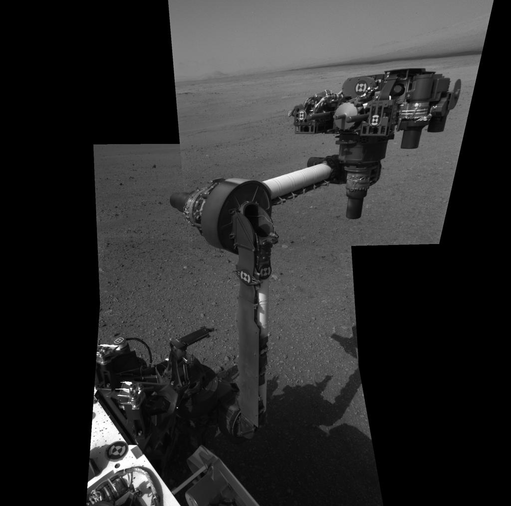

This image
shows the tracks left by NASA's Curiosity rover on Aug. 22, 2012, as
it completed its first test drive on Mars. The rover went forward 15
feet (4.5 meters), rotated 120 degrees and then reversed 8.2 feet (2.5
meters). Curiosity is now 20 feet (6 meters) from its landing site,
named Bradbury Landing. This image was taken by a front
Hazard-Avoidance camera, which has a fisheye lens.
Curiosity's First Arm Extension

Image Credit: NASA/JPL-Caltech
The
extended robotic arm of NASA's Mars rover Curiosity can be seen in this
mosaic of full-resolution images from Curiosity's Navigation camera
(Navcam). Curiosity extended its arm on Aug. 20, 2012. The 7-foot-long
(2.1-meter-long) arm maneuvers a turret of tools including a camera, a
drill, a spectrometer, a scoop and mechanisms for sieving and
portioning samples of powdered rock and soil. This mosaic is made using
three images projected in a perspective view, which means the images
are combined to appear as if they were taken from a single, larger
camera. A thumbnail version is available at
http://photojournal.jpl.nasa.gov/catalog/PIA15692 . Curiosity landed on
Mars on Aug. 5 PDT (Aug. 6 EDT) to begin its two-year mission, using 10
instruments to assess whether a carefully chosen study area inside Gale
Crater has ever offered environmental conditions favorable for
microbial life. The Jet Propulsion Laboratory, a division of the
California Institute of Technology, Pasadena, manages the Mars Science
Laboratory Project, including Curiosity, for NASA's Science Mission
Directorate, Washington. JPL designed and built the rover. The Space
Division of MDA Information Systems Inc. built the robotic arm in
Pasadena.